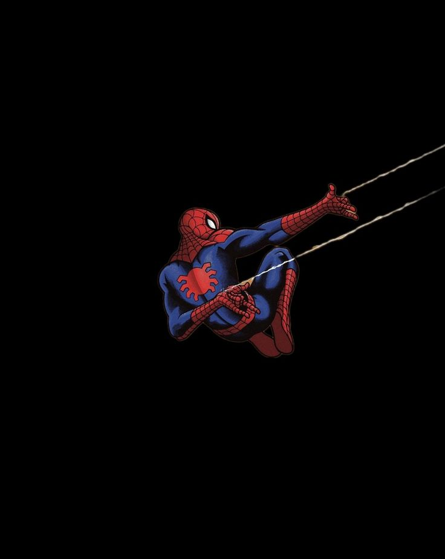

WHO IS LINKED TO MOST?
Inbound leaders
| Hero | In | Out |
|---|
WEEK 01 / DIRECTED NETWORKS
A Codex-made recap of the Marvel hero-link network: 303 Wikipedia articles, 1,784 directed links, and two very different ways to matter.
Explore inbound references ↓A DIRECTED OPENING
Nine links leave Spider-Man's article. Select the frame to expand into the wider reference constellation.

9 outbound links from Spider-Man
INTERACTIVE VIEW
Each bar is a hero article. Longer means more other hero articles link to it.
THE DISTRIBUTION
Linear views keep the common cases visible. Log–log views make the long tail easier to inspect.
TWO RANKINGS
WHO IS LINKED TO MOST?
| Hero | In | Out |
|---|
WHO LINKS OUT MOST?
| Hero | Out | In |
|---|
HOW TO READ THE GAP
In-degree counts how often a character is named and linked from other hero articles. It is a form of network visibility.
Out-degree counts links made from one hero’s own article. It can reflect dense relationships, article length, or editorial linking habits.
These links are traces of Wikipedia’s article structure in one frozen snapshot—not a direct measure of narrative importance.